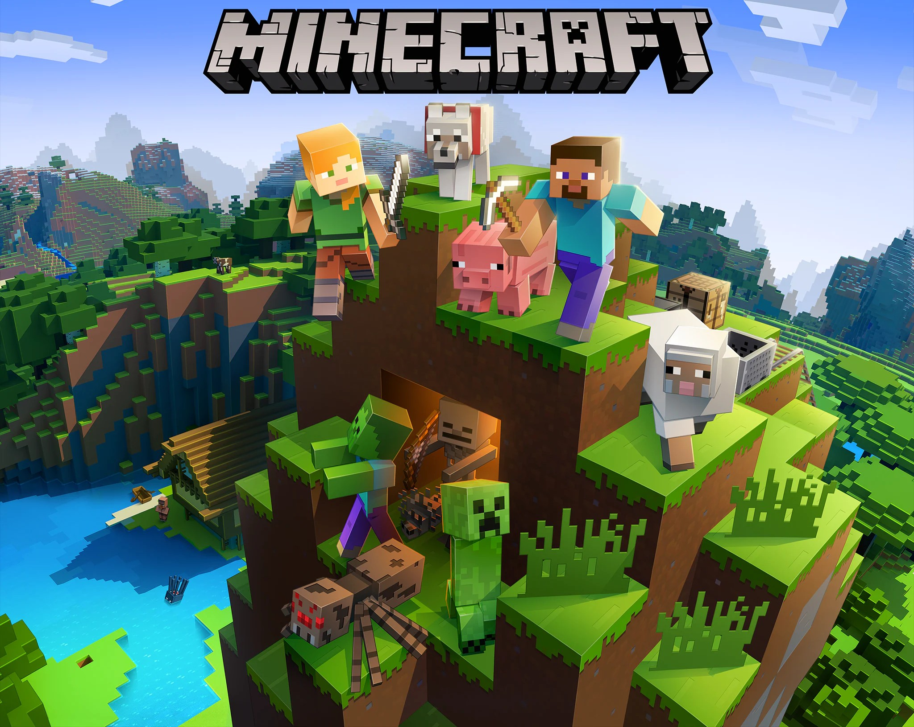
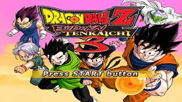
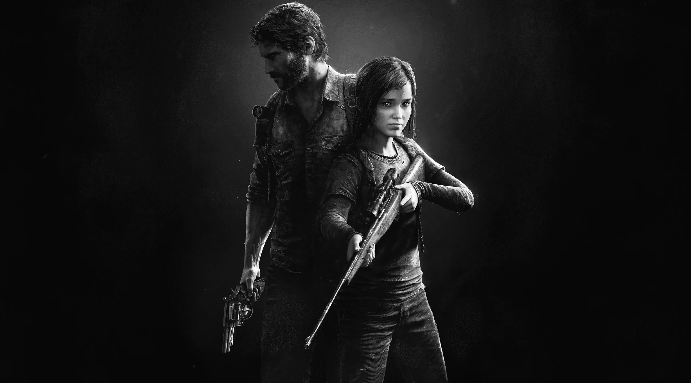

Te damos la bienvenida a nuestra página dedicada a los juegos, uno de los mercados que más ha crecido últimamente.
Aquí te presentaremos cinco juegos que han dejado una huella tanto en mí como en un amplio grupo de personas.
Cuatro grandes juegos segun nuestra opinion

Minecraft es un popular videojuego de construcción y
aventura desarrollado por Mojang Studios. Fue lanzado en 2011 y se ha convertido en
uno de los juegos más vendidos de todos los tiempos. Minecraft ha sido elogiado por su
libertad de juego, su enfoque en la creatividad y su comunidad activa de jugadores y
creadores de contenido. VER MAS

Dragon Ball Budokai Tenkaichi 3 es un emocionante juego de lucha basado en la serie de anime Dragon Ball. Controla a tus personajes favoritos y participa en intensos combates uno contra uno en escenarios icónicos. Desarrollado por Spike Chunsoft. VER MAS

The Last of Us Parte 1 es un aclamado videojuego de acción y supervivencia desarrollado por Naughty Dog. Ambientado en un mundo postapocalíptico, el juego sigue la historia de Joel, un hombre endurecido por la pérdida, y Ellie, una joven valiente y misteriosa. VER MAS
FIFA es una reconocida franquicia de videojuegos de fútbol desarrollada por EA Sports. Cada año, se lanza una nueva entrega que ofrece una experiencia auténtica y realista del deporte más popular del mundo. VER MAS
Conclucion
En conclusión, todos estos juegos han dejado una huella tanto en mí como en la industria del gaming en general. ¿Quién no ha pasado horas inmerso en la supervivencia de Minecraft o disfrutando de intensas batallas en Sky Wars? ¿Quién no ha vibrado con la épica experiencia de Dragon Ball, rompiendo controles de juego en el proceso? ¿Quién no ha sentido emociones intensas con la cautivadora historia de The Last of Us? Y, por supuesto, ¿quién no ha perdido amistades en acalorados partidos de FIFA?
Espero sinceramente que mi página les haya gustado y entretenido, además de haberles proporcionado algo de utilidad. Ha sido un placer compartir mi pasión por los juegos con ustedes y espero seguir ofreciendo contenido interesante y emocionante en el futuro. ¡Gracias por visitar mi página y ser parte de esta increíble comunidad de jugadores!